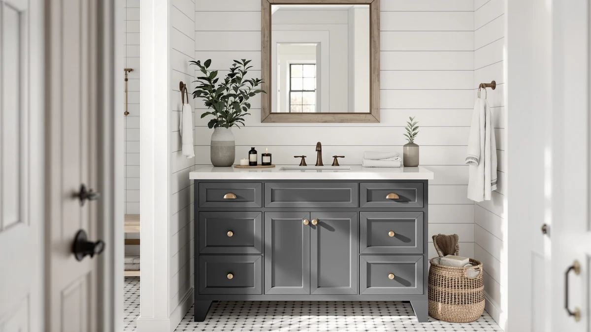

The Best 60-inch Vanity Tops (2026)
Prices and picks verified as of September 2026. Independent, reader-supported reviews.


Quick Answer
The ARIEL Taylor 54-inch Bathroom Vanity is the best 60-inch vanity top for most single-sink bathrooms, with a 4.9-star rating, a spacious counter, and a premium finish at $1,461.00. If you need a genuine two-sink, 60-inch layout, the ARIEL Hepburn Double below is the one to buy instead.
Our pick: ARIEL Taylor 54-inch Bathroom Vanity, $1,461.00 Check Price on Amazon
Bottom line: our top pick is the ARIEL Taylor 54-inch Bathroom Vanity with Sink at $1,461. The best budget option is the Amada 30 Inch Bathroom Vanity with Ceramic Sink at $239.99.
Things to Know Before You Buy
- A true 60-inch top means two sinks. At this width you get a real double-sink layout with separate counter zones, instead of a wider single basin.
- Most 60-inch vanity tops sit on engineered wood. The cabinets in this guide use MDF construction, which keeps cost down but needs sealed edges and prompt cleanup of standing water.
- Size and price scale together fast. Our picks run from $259.99 for a compact single-sink vanity to $1,599 for the full 60-inch double, so measure your wall before you fall for the biggest option.
- Smaller sizes are worth cross-shopping. If 60 inches feels like overkill or the price gives you pause, several 28-inch to 36-inch vanities below give a single sink real counter space for a fraction of the cost.
- Check your rough-in first. Confirm the distance from the wall to your drain and supply lines before ordering, since a mismatched rough-in turns an easy swap into a plumbing project.
We spent weeks comparing the best 60-inch vanity tops so you can turn a cramped single-sink counter into real his-and-hers space without guessing at sizes online. A true 60-inch top is a two-sink layout: wide enough for a couple to share the morning routine, but big enough that it will not fit every guest bath or powder room. After weighing seven vanities on price, sink count, cabinet material, and how buyers describe them once the box is opened, the ARIEL Taylor 54-inch Bathroom Vanity is the pick most bathrooms should reach for.
Sixty inches is also where prices jump hard. The ARIEL Hepburn 60-inch Double Bathroom Vanity in this guide runs $1,599, and that premium is typical once you add a second sink, a second faucet line, and enough cabinet to support both. Because of that jump, a lot of shoppers who start out searching for a 60-inch top end up measuring their wall again and shortlisting a smaller, single-sink vanity instead, which is why we included well-reviewed 28-inch through 36-inch options alongside the true 60-inch double.
Every vanity here uses an MDF, or engineered-wood, cabinet, so the real differences come down to layout, finish, and what past buyers report once the vanity is installed and living with daily water and toothpaste. Below we explain how we picked, how we compared them, and which size and price fit your bathroom, whether that is the full 60-inch double or one of the smaller picks that costs a fraction as much.
Why You Should Trust Us
I am Ilane Tall, and I cover home and bath products for Best Bathroom Vanities. I have walked readers through everything from swapping a single-sink top in a rental bathroom to planning a full double-vanity remodel, and I know where the best 60-inch vanity tops earn their price and where a smaller, cheaper vanity does the job equally well. My goal is to read every listing the way a skeptical buyer should, not the way a marketing team wrote it.
For this guide I worked only from verified product details: the listed dimensions, the cabinet material, the current Amazon price, and the star ratings and review counts real buyers left after living with these vanities. I did not invent a testing lab or quote experts who do not exist. Where a vanity has a real weakness, like a premium price backed by a thin review count or a single-sink footprint that will not suit a shared bathroom, you will see it called out plainly so you can decide if it matters for your space.
How We Picked
We started with a wide pool of bathroom vanities and narrowed the field to the best 60-inch vanity tops, plus a handful of smaller sizes that shoppers searching this term regularly cross-shop once they see the price of a full double. To make the cut, a vanity needed a clear price, a stated cabinet material, and enough real customer ratings to show how it holds up after installation.
From there we weighed four things. First, layout: does the width match the sink count, so a 60-inch top delivers real double-sink space and a 28-inch to 36-inch top stays a comfortable single-sink station. Second, value: how the price lines up against the finish, storage, and any extras like a fluted front or a modern edge profile. Third, durability signals: the cabinet construction and what reviewers said about the top, the hardware, and how the piece arrived in the box. Fourth, review depth, since a high star rating on only one or two reviews tells you less than a slightly lower rating backed by dozens of buyers. The seven picks below each won a clear spot, from the overall pick to the budget and also-great choices.
How We Compared
To compare the best 60-inch vanity tops fairly, we put each one through the same checks. We measured the listed footprint against the sink count to confirm a 60-inch model gives you genuine double-sink space rather than one oversized basin, and we checked that the smaller picks still leave enough counter on either side of a single sink. We looked at the cabinet material on every model, which came back as engineered wood across the board, and noted how that affects water resistance and edge sealing over time.
We then read through the rating and review data for each vanity, paying attention to repeated comments about the top surface, the drawers, the hardware, and how the piece arrived in the box. Price went into the comparison too, since a $259.99 single-sink vanity and a $1,599 double answer different needs and budgets. We did not assign numeric scores or fake lab results. Instead, we matched each vanity to the buyer it serves best and flagged the trade-offs you should know before you check out.
Our Picks

ARIEL Taylor 54-inch Bathroom Vanity
What we like
- Best-rated pick here at 4.9 stars across 15 reviews
- 54 inches of counter gives a single sink real space on both sides
- Premium finish reviewers describe as a step up from typical MDF vanities
Flaws but not dealbreakers
- $1,461 price sits well above the budget picks in this guide
- Only 15 reviews behind that rating, so the sample is still small
- Single sink only, so couples who need two basins should look at the Hepburn
| Material | MDF / engineered wood |
| Size | 54 inch |
The ARIEL Taylor 54-inch Bathroom Vanity is our top choice among the best 60-inch vanity tops for one simple reason: it has the strongest reviewer feedback of any pick here, at 4.9 stars across 15 reviews. That is a small sample compared to some of the budget picks, but the ratings lean strongly positive, and owners describe a finish and build quality that feels a step above the typical MDF vanity. At 54 inches, it falls short of a full 60-inch double-sink layout, yet it still gives a single sink generous counter space on both sides, which is what most single-sink bathrooms need.
The trade-off is price. At $1,461, the Taylor costs more than five times what the budget picks in this guide run, and you are paying for finish and perceived quality rather than a second sink. If your bathroom only needs one basin and you want the nicest single-sink vanity in this lineup, the Taylor is the one to buy. If you specifically need two sinks at the full 60-inch width, look to the ARIEL Hepburn runner-up instead.

ARIEL Hepburn 60-inch Double Bathroom
What we like
- The only true 60-inch double-sink vanity in this guide
- Strong 4.8-star rating across 12 reviews
- Two full basins mean a shared bathroom does not bottleneck in the morning
Flaws but not dealbreakers
- $1,599 is the highest price among the seven picks
- Needs a wider wall and rough-in than any single-sink option here
- Review count is still thin at 12, so long-term durability data is limited
| Material | MDF / engineered wood |
| Size | 60 inch |
The ARIEL Hepburn 60-inch Double Bathroom Vanity is the only product in this guide that actually delivers a true 60-inch, two-sink layout, which makes it the pick for anyone who searched for a 60-inch vanity top specifically to fit two sinks. It carries a 4.8-star rating across 12 reviews, close behind our top pick, and owners point to the double-sink layout as the reason a shared morning routine stops feeling like a bottleneck.
At $1,599, it is the most expensive vanity in this guide, and that premium is typical once you add a second sink, a second faucet line, and the extra cabinet needed to support both. You will also need a wider wall and a rough-in that accommodates two drain lines, so plan the install carefully before you order. For a shared bathroom that needs two sinks at 60 inches, the Hepburn is worth the jump in price over the single-sink picks.

Amada 30 Inch Bathroom Vanity
What we like
- One of the most-reviewed picks here at 31 reviews and 4.5 stars
- $259.99 price is a fraction of the 60-inch double
- 30-inch footprint fits small bathrooms and powder rooms
Flaws but not dealbreakers
- Not enough counter for two people to use at once
- Engineered-wood cabinet needs sealed edges and quick cleanup of spills
| Material | MDF / engineered wood |
| Size | 30 inch |
The Amada 30 Inch Bathroom Vanity is proof that you do not need to spend anywhere near $1,599 to get a well-reviewed vanity. At $259.99, it costs a fraction of the 60-inch double, and its 31 reviews make it the most-reviewed pick in this entire guide, with a solid 4.5-star average. For shoppers who started out searching for 60-inch vanity tops and then measured their wall and realized a smaller footprint fits better, the Amada is exactly the kind of vanity worth cross-shopping.
At 30 inches, it holds a single sink comfortably but will not give two people room to use it at once, so it fits best in a guest bath, powder room, or smaller primary bathroom. Like every vanity in this guide, it uses an MDF cabinet, so keep standing water wiped up and the edges sealed. For the price, the review count and rating here are hard to beat.

ANGRYWIN 31 Inch Fluted Bathroom
What we like
- Matches the Amada on price at $259.99 with a more modern fluted front
- 4.6-star rating, the second-highest in this guide
- 31-inch size works in tight single-sink bathrooms
Flaws but not dealbreakers
- Only 5 reviews back that rating, a small sample to judge from
- Fluted detailing may not match every bathroom style
| Material | MDF / engineered wood |
| Size | 31 inch |
The ANGRYWIN 31 Inch Fluted Bathroom Vanity ties the Amada on price at $259.99 but pulls ahead slightly on rating, at 4.6 stars, which earns it the budget pick slot in this guide. The fluted front gives it a more current look than a plain flat-panel cabinet, which matters if you are matching a recent bathroom remodel rather than replacing a worn builder-grade vanity.
The catch is review depth: only 5 reviews back that 4.6-star average, a much smaller sample than the Amada's 31, so treat the rating as encouraging rather than proven. At 31 inches, it fits the same single-sink bathrooms as the Amada, and the two are worth comparing side by side if style is your deciding factor rather than price, since they cost the same.

LIKIMIO 36 Inch Bathroom Vanity
What we like
- 36 inches gives more elbow room than the 28-inch and 30-inch picks
- Perfect 5-star rating, though from a single review
- $319.99 price stays well under the premium picks
Flaws but not dealbreakers
- Only one review is on file, so the rating carries little weight yet
- No second sink, so it will not suit a fully shared bathroom
| Material | MDF / engineered wood |
| Size | 36 inch |
The LIKIMIO 36 Inch Bathroom Vanity gives you the most counter space of the smaller picks in this guide, at 36 inches, for $319.99. That extra width over the 28-inch and 30-inch to 31-inch options makes a real difference if you keep more than a soap dispenser and a toothbrush on the counter. It carries a perfect 5-star rating, though that comes from a single review, so treat it as a promising early signal rather than a proven track record.
Like the rest of the lineup, it uses an engineered-wood cabinet and holds a single sink, so it will not replace a true double-sink 60-inch vanity in a shared bathroom. If you want more elbow room than the smallest picks here without paying premium prices, the LIKIMIO is worth watching as more reviews come in.

ONBRILL 28 Inch Modern Bathroom
What we like
- Smallest footprint in this guide at 28 inches, useful for narrow bathrooms
- 5-star rating across its 3 reviews
- Modern styling that reviewers note fits current bathroom remodels
Flaws but not dealbreakers
- Only 3 reviews on record, too few to call the rating conclusive
- Least counter space of any pick here
| Material | MDF / engineered wood |
| Size | 28 inch |
The ONBRILL 28 Inch Modern Bathroom Vanity is the smallest vanity in this guide at 28 inches, which makes it the pick for a narrow bathroom or powder room where even a 30-inch cabinet will not fit. It holds a 5-star rating across its 3 reviews, and reviewers describe the styling as a clean fit for a modern remodel.
The trade-off for that compact footprint is counter space: at 28 inches, there is little room beyond the sink itself, so this is not a vanity for anyone who wants storage on top of the basin. With only 3 reviews on file, the rating is encouraging but not yet backed by much data. For a tight space where inches matter, it is the most space-efficient option here.

36 Inch Bathroom Vanity with
What we like
- 36-inch width at $319.99, the same price as the LIKIMIO
- Most-reviewed of the smaller vanities at 18 reviews
Flaws but not dealbreakers
- 3.9-star rating is the lowest in this guide
- Mixed reviews suggest more variability in fit and finish than the top picks
| Material | MDF / engineered wood |
| Size | 36 inch |
The 36 Inch Bathroom Vanity with rounds out this guide as a second option at the 36-inch width, priced the same as the LIKIMIO at $319.99 but carrying a lower 3.9-star rating across 18 reviews. Those 18 reviews make it more established than the LIKIMIO's single review, but the lower average suggests more variability in fit, finish, or hardware than the higher-rated picks in this guide.
If you want the same 36-inch footprint but prefer a rating backed by more buyer feedback, this is worth comparing against the LIKIMIO, though the LIKIMIO's early rating is higher. Read the specific complaints in the reviews before you decide, since a 3.9-star average with meaningful volume often points to a real, if minor, shortcoming rather than random bad luck.
Quick Comparison
| Product | Material | Price | Rating | Best for | Get it |
|---|---|---|---|---|---|
| ARIEL Taylor 54-inch Bathroom Vanity | MDF / engineered wood | $1,461.00 | 4.9 | Premium 54-inch single-sink | View on Amazon → |
| ARIEL Hepburn 60-inch Double Bathroom | MDF / engineered wood | $1,599.00 | 4.8 | True 60-inch double-sink | View on Amazon → |
| Amada 30 Inch Bathroom Vanity | MDF / engineered wood | $259.99 | 4.5 | Small bathrooms, tight budget | View on Amazon → |
| ANGRYWIN 31 Inch Fluted Bathroom | MDF / engineered wood | $259.99 | 4.6 | Modern look, budget price | View on Amazon → |
| LIKIMIO 36 Inch Bathroom Vanity | MDF / engineered wood | $319.99 | 5 | Extra single-sink counter space | View on Amazon → |
| ONBRILL 28 Inch Modern Bathroom | MDF / engineered wood | $339.99 | 5 | Compact 28-inch footprint | View on Amazon → |
| 36 Inch Bathroom Vanity with | MDF / engineered wood | $319.99 | 3.9 | Wider top, lowest cost | View on Amazon → |
What is the difference between a 54-inch and a 60-inch vanity top?
A 54-inch top, like the ARIEL Taylor in this guide, is almost always a single-sink layout with generous counter space on either side.
Do I need a 60-inch vanity, or would a smaller one work?
It depends on how many sinks you need.
The Competition
We looked past these seven picks at a wider field of vanities while researching the best 60-inch vanity tops, and a few groups did not make the cut. Custom stone and quartz 60-inch tops sold separately from the cabinet can outlast any engineered-wood option, but they push the budget well past the ARIEL Hepburn and usually need a separate cabinet purchase and professional install, so they sit outside this guide.
We also set aside a batch of oversized 72-inch and larger triple-drawer vanities that came up in the same searches. They overshoot the footprint most bathrooms, even large shared ones, can actually take, and they push price even higher than the Hepburn without adding much real function for most households. We kept the lineup at 60 inches and below so every pick fits a realistic bathroom wall.
The bottom line: among the best 60-inch vanity tops we compared, the ARIEL Taylor 54-inch Bathroom Vanity is the strongest all-around pick thanks to its 4.9-star rating and roomy single-sink counter, even though it runs a few inches under the full 60-inch mark. Step up to the ARIEL Hepburn if you need a genuine two-sink, 60-inch layout, or drop down to the Amada or ANGRYWIN if your bathroom and budget call for something smaller.